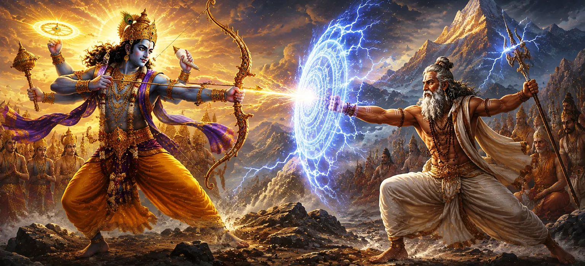

This chapter narrates the remarkable confrontation between Lord Viṣṇu and the sage Dadhīca. The encounter demonstrated the immense spiritual power attained through devotion and austerity. While Lord Viṣṇu represented divine authority and cosmic preservation, Dadhīca stood as an embodiment of unwavering faith and spiritual realization. Their interaction revealed profound truths about devotion, divine grace, and the strength that arises from complete surrender to the Supreme.
Events surrounding King Kṣuva and the spiritual authority of Dadhīca eventually led to a confrontation involving Lord Viṣṇu. The situation became a test of spiritual resolve and divine power, drawing the attention of celestial beings and sages alike.
Throughout the confrontation, Dadhīca remained completely devoted to Lord Shiva. His faith was not shaken by fear, power, or threats. The sage's spiritual strength arose from years of austerity, meditation, and unwavering dedication to the Divine.
As the conflict intensified, extraordinary divine powers were displayed. Celestial weapons and supernatural abilities became visible, illustrating the immense forces at work. Yet the deeper focus of the narrative remained on spiritual realization rather than physical victory.
Dadhīca’s devotion earned him the protection of Lord Shiva’s grace. The chapter emphasizes that sincere devotion creates a powerful spiritual shield. Through divine favor, the sage remained steadfast even in the presence of overwhelming power.
True devotion grants courage and spiritual strength.
The protection of the Divine surpasses all worldly power.
The greatest triumph is mastery over fear and attachment.
The gods and sages who witnessed the confrontation were amazed by Dadhīca’s unwavering composure and spiritual strength. They saw that devotion rooted in truth could withstand even the greatest trials.
The chapter ultimately teaches that spiritual realization is superior to external displays of power. The highest victory belongs to those who remain united with the Divine through faith, humility, and devotion.
This chapter reminds devotees that the strength gained through faith and devotion is greater than any worldly force. Dadhīca’s example demonstrates that sincere surrender to the Divine transforms ordinary life into a source of extraordinary spiritual power.
Dadhīca’s extraordinary resilience was not gained through physical power but through years of disciplined austerity and spiritual practice. His life demonstrated that true strength is cultivated within the heart and mind. The chapter highlights how dedication to sacred principles can grant a devotee remarkable courage and inner stability.
One of the most inspiring lessons of this narrative is that genuine faith overcomes fear. Even when confronted with overwhelming divine power, Dadhīca remained calm because his trust in Lord Shiva never wavered. His example teaches that a heart anchored in devotion remains steady through every challenge and uncertainty.
"Unwavering devotion is stronger than the mightiest weapon."
Continue exploring the sacred events of Sati Khanda as the battle between Lord Viṣṇu and Sage Dadhīca reveals the power of unwavering devotion, leading to the sacred journey toward Mount Kailāsa, the eternal abode of Lord Shiva.